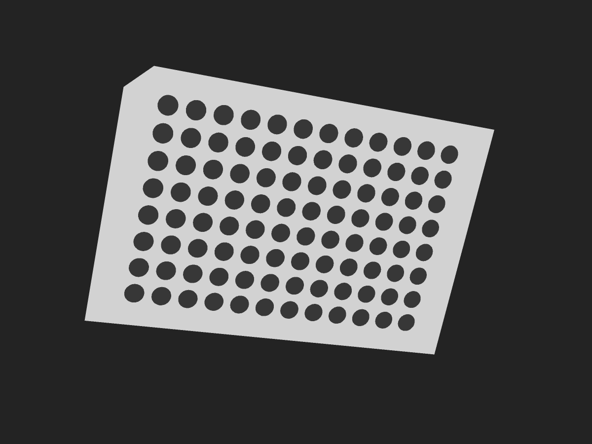
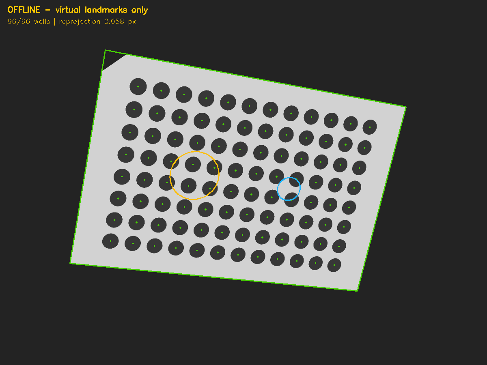
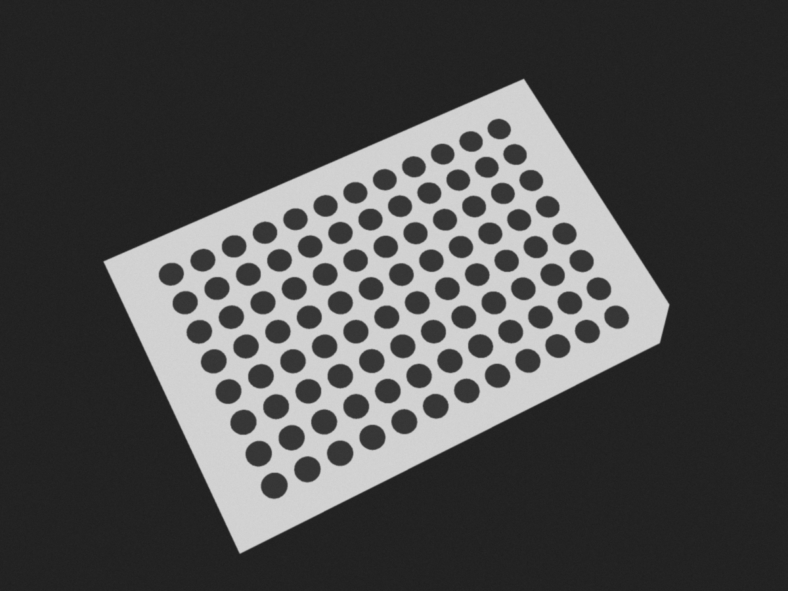
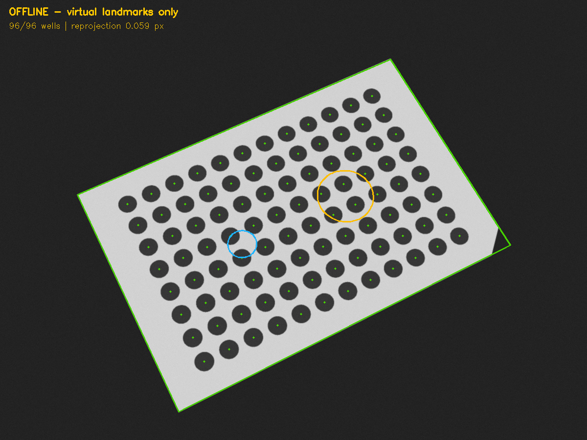
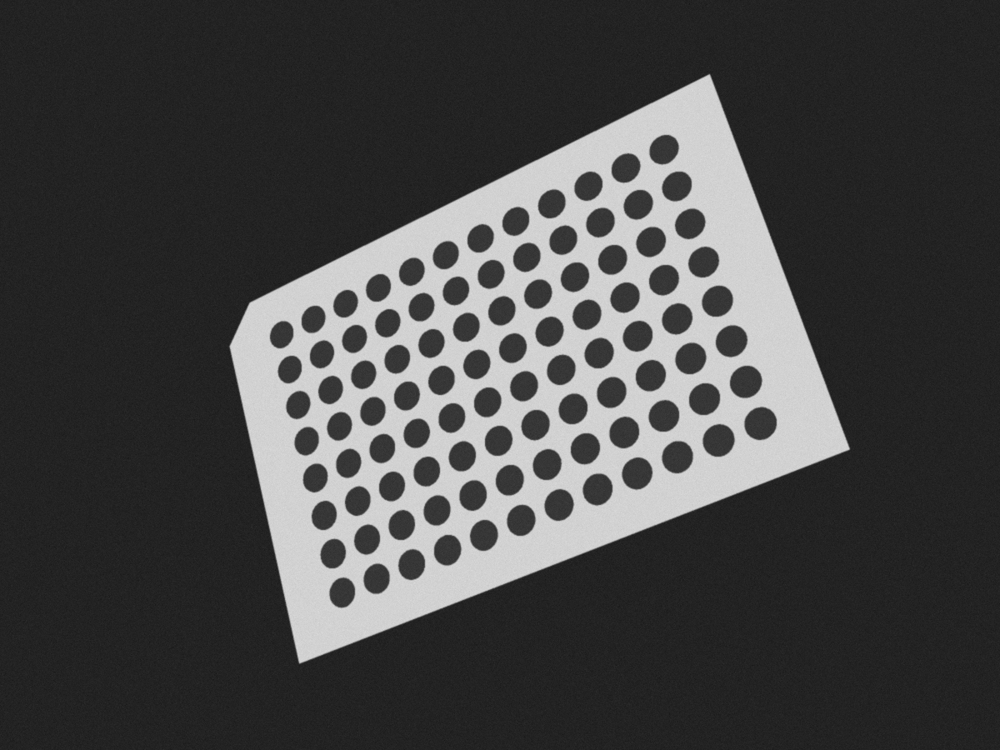
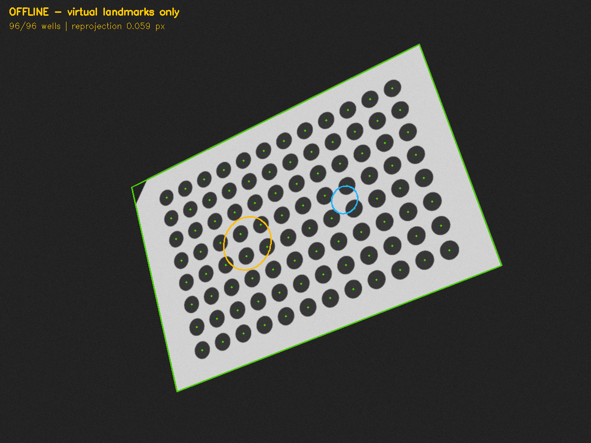

Synthetic proof only. No robot commands or camera capture. Falcon catalog, physical geometry, orientation feature, camera calibration and taught landmark mapping remain unverified.
Left: generated image. Right: detected rim and well centers (green), projected virtual landmarks (orange/blue). The virtual circles are outputs, never detection evidence.
| Fixture | Detected wells | Reprojection RMS | Origin error vs truth | Rotation error vs truth |
|---|---|---|---|---|
| oblique | 96/96 | 0.058 px | 0.086 mm | 0.028° |
| rotated | 96/96 | 0.059 px | 0.058 mm | 0.014° |
| tilted | 96/96 | 0.059 px | 0.063 mm | 0.006° |






These errors measure recovery of generated geometry only, not real camera accuracy. JSON files preserve inputs, detections, pose and known truth.